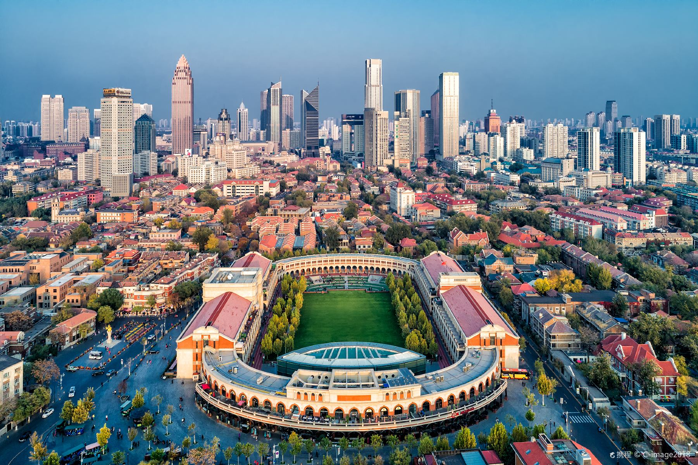
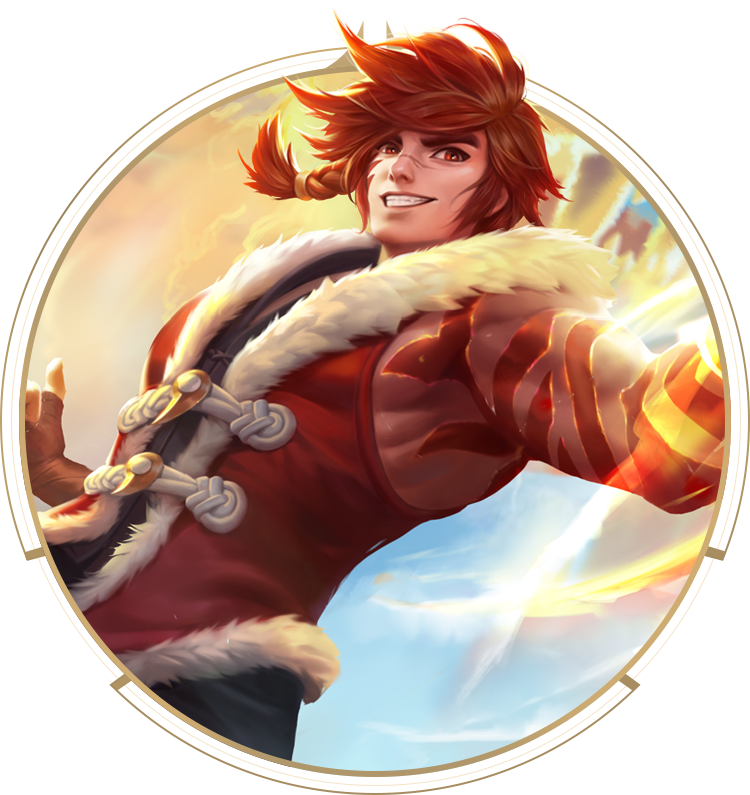
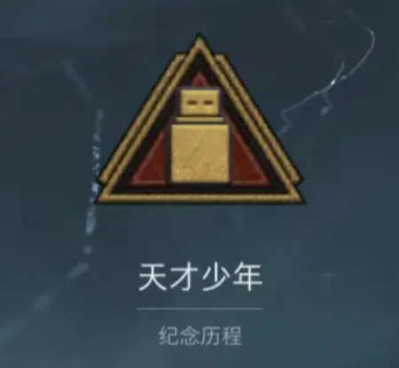

首页
山有扶苏，隰有荷华。很高兴与你相遇。
这里是月天林的个人主页，记录我的学习日常、音乐爱好、游戏经历与生活随感。网页虽简，却也藏着一点真实的个人色彩。

本站导航
你可以通过顶部菜单进入不同页面：
- 个人简介：了解我的基本信息、家乡与性格爱好。
- 兴趣日常：记录音乐、篮球和平时喜欢做的事。
- 学习心得：分享学习过程中的计划、方法与感受。
- 游戏天地：展示王者荣耀和三角洲行动中的个人爱好。
- 联系我：欢迎交流学习、音乐和游戏话题。

关于我
大家好，我是甘宇，网名月天林，华中科技大学计算机学院大一新生。
我是一个喜欢把事情慢慢理顺的人，既爱安静地学习，也喜欢在音乐和运动里释放自己。
基本信息
| 项目 | 内容 |
|---|---|
| 姓名 | 甘宇 |
| 网名 | 月天林 |
| 学校 | 华中科技大学 |
| 专业 | 计算机学院 |
| 家乡 | 天津蓟县 |
我的家乡
天津蓟县有着盘山、海河等熟悉的风景。家乡的山水和城市气息，也让我养成了既喜欢安静、也愿意尝试新事物的性格。
我的爱好
平日里我热爱音乐、唱歌，也喜欢和朋友一起打篮球。音乐能让我放松，篮球则让我保持专注和行动力。
性格标签
热爱音乐 喜欢运动 认真学习 乐于交流 爱玩游戏
兴趣日常
我的日常并不复杂，主要围绕音乐、篮球和一些个人爱好展开。它们看起来不同，却都能让我找到生活的节奏感。
🎵 音乐与歌唱
闲暇时我喜欢听歌，也爱放声歌唱。旋律不只是背景，更像是情绪的出口。遇到压力时，一首喜欢的歌常常能让我重新安静下来。
喜欢的音乐类型
- 旋律感强的流行音乐
- 节奏明快、适合放松的歌曲
- 部分古风、国风音乐
🏀 篮球
有空我会约朋友去球场打球。奔跑、传球、投篮，这些过程让我暂时从学习里抽离出来，也让我更懂得配合和坚持。
篮球带给我的改变
- 提升了体能和专注力
- 增强了团队配合意识
- 让我学会在压力下保持冷静
学习心得
作为计算机学院的新生，我清楚自己还有很多东西要学。学习不是一时的热情，而是长期的习惯积累。
我的学习态度
我相信“循序渐进”四个字。遇到难的内容不急躁，先把基础概念理解清楚，再慢慢深入。很多知识当时不懂，反复几次后就会逐渐清晰。

近期学习重点
- 熟悉计算机基础概念与学习路径
- 坚持每天安排固定学习时间
- 整理错题与笔记，避免重复犯错
- 多思考、多总结，而不是只追求进度
学习方法
| 方法 | 说明 |
|---|---|
| 制定计划 | 每天安排明确任务，避免盲目学习 |
| 及时复习 | 当天内容当天消化，减少遗忘 |
| 整理笔记 | 用自己的话重述知识点，加深理解 |
| 适度练习 | 通过练习发现问题，再回到知识点 |
我的目标
短期目标是尽快适应大学学习节奏，长期目标是成为一名基础扎实、能够独立解决问题的计算机相关学习者。
游戏天地
游戏是我课余生活的一部分。我喜欢和朋友一起玩，也喜欢在游戏里研究位置、配合和策略。
王者荣耀
王者是我比较熟悉的游戏之一。我偏爱游走位，喜欢在地图上寻找节奏，帮助队伍建立优势。
常用英雄


英雄介绍
| 英雄 | 我的理解 |
|---|---|
| 大司命 | 机动性强，适合在团战中寻找切入时机。 |
| 裴擒虎 | 前期节奏灵活，适合主动带动比赛。 |
| 苏烈 | 开团和保护能力强，是队伍的重要前排。 |
三角洲行动
我也在接触三角洲行动。游戏里既有紧张的战斗时刻，也有需要耐心和判断的时刻，这一点很吸引我。

游戏感悟
- 心态比操作更重要，急躁时容易失误。
- 团队配合往往比个人表现更关键。
- 游戏和学习一样，都需要复盘和总结。
留言交流
很高兴认识你。如果你也喜欢音乐、篮球、游戏，或者正在学习计算机相关内容，欢迎一起交流。
交流话题
- 音乐推荐和唱歌心得
- 篮球技巧与日常训练
- 学习方法与时间安排
- 王者荣耀英雄玩法
- 三角洲行动游戏体验

写在最后
个人主页虽然简单，但也是我认真整理过的小世界。感谢你的浏览，期待和你进一步交流。